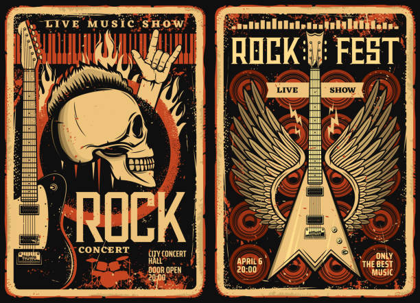

Rock
History:
- During the 40s, the popular genres of blues and country music were combined using powerful electric guitar riffs and drums to create a more "aggressive" genre
- In the 50s, Chuck Berry, a pioneer of rock music, grew in popularity, leading to the growth of rock music as a whole
- People appreciated the aspect of defiance that rock music popularized, both to popular music of the past and to the conservative society of the time
Impact:
- Rock influenced many factors of life with the major changes affecting fashion, attitudes, and language
- To this day, people still wear shirts of famous rock bands like AC/DC, Queen, The Rolling Stones, etc
- Having appeared during a time of heavy segregation between whites and blacks in the 50s, rock music changed musical norms and opened a door to youth culture
- Many white rock 'n' rollers were able to build a ladder for black artists to enter into the musical world, indicating one of the first steps of acceptance
- Rock promoted the idea of self-expression and individuality, encouraging people to embrace both their identities and freedom



Classical
History:
- Classical music was first able to gain importance from the composers: Joseph Haydn, Wolfgang Amadeus Mozart,Ludwig van Beethoven, and Franz Schubert, etc.
- Classical music was during the Classical period which became significant between the Baroque & Romantic periods.
- As mentioned before, the most popular classical artist was Ludwig van Beethoven who was regarded as a Romantic composer who was responsible for the transition to the Romantic era.
- The style of Classicism was made to highlight the ideals of Classical antiquity
Impact:
- The calming effect of classical music takes away jitters or nervousness, helping to decrease heart rate and anxiety
- Expresses the deepest thoughts of civilization
- Influence was evident in the Progressive Rock movement: bands like Genesis, King Crimson, Pink Floyd, and Yes took what they could use from the classical world and made the music their own

Pop
History:
- With the pop genre, the most ~popular~ songs in the mainstream could be categorized into a group with characteristics of all sorts of styles of music
- Due to the growing popularity of radio, television, and music icons like Elvis Presley, music became at lot more mainstream and accessible
Impact:
- Pop music has the ability to encourage individuals to think about where they're going in the world

Country
History:
- Originated during the early 1900s, country music was a significant part of rural southern and western American cultures.
- The genre's roots lie in folk music, ballads, and settlers in areas like the Appalachians.
- Fiddlin' John Carson created one of the first popular country songs in the 1920s, which led to the further growth of the genre in mainstream music.

Jazz
History:
- The genre of jazz originated with west